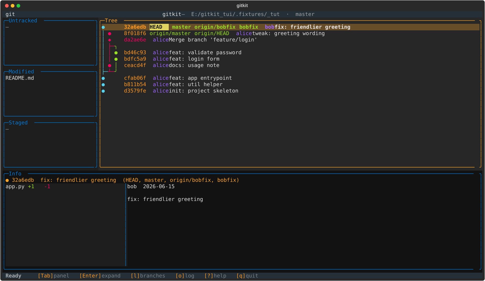
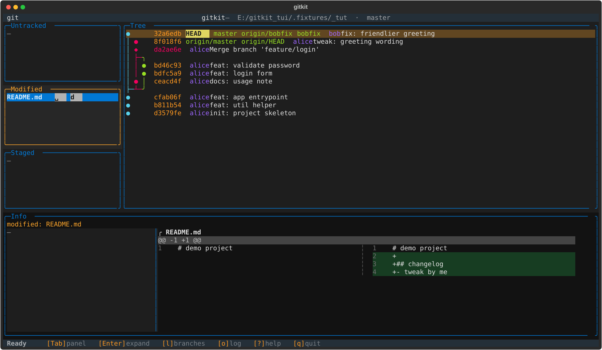
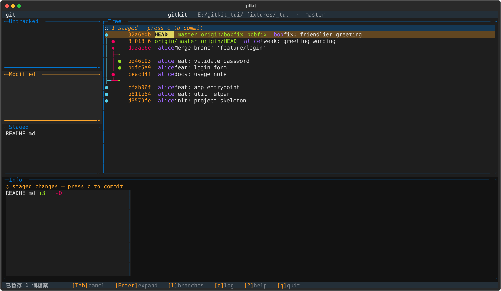
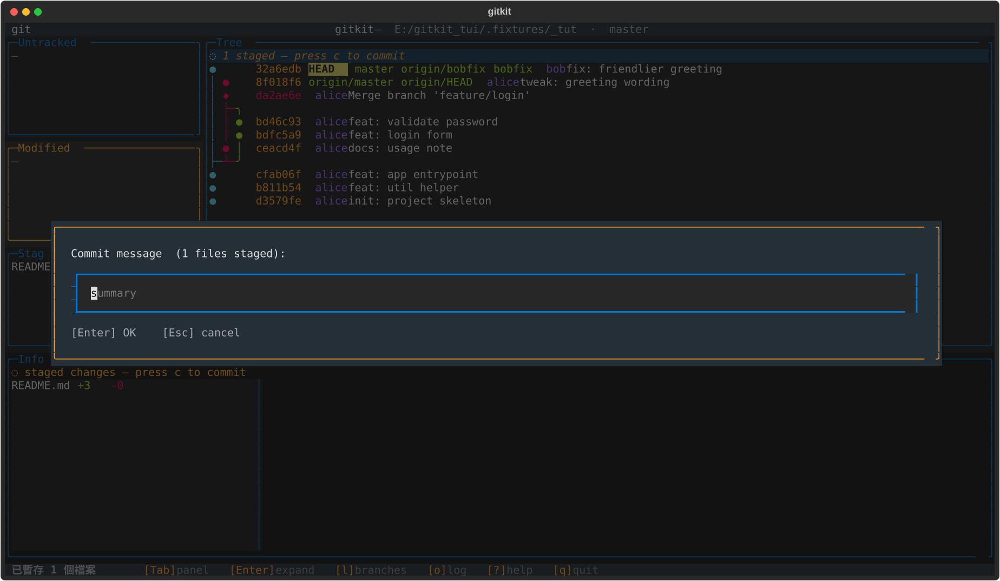
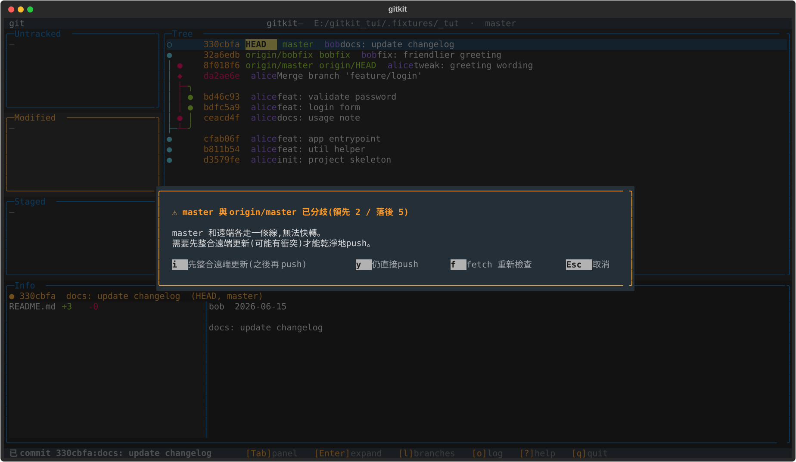
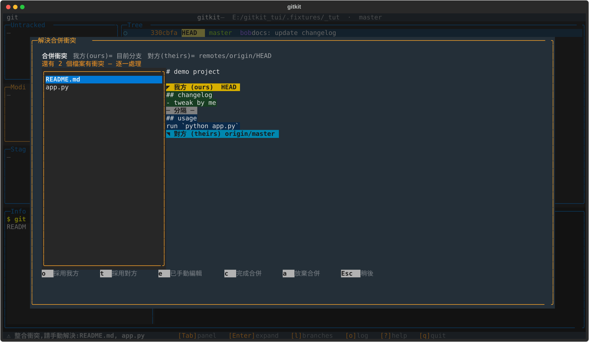

用一個例子走完一次日常流程:改檔 → 暫存 → 提交 → 推送 → 解決衝突
開啟方式:python -m gitkit /你的/git/專案路徑
移動:↑↓ 或 jk 切換面板:Tab 說明:? 離開:q
① 開啟後的畫面
左邊三欄是檔案狀態(Untracked／Modified／Staged),中間是分支線圖,下面 Info 顯示選到項目的內容。

② 改了檔案 → 出現在 Modified
用 Tab 切到 Modified 欄、用 ↑↓ 選檔(或滑鼠單擊),下方 Info 立刻顯示這個檔的改動。

③ 按 Space 暫存 → 移到 Staged
暫存後,中間線圖最上方會出現「◌ 1 staged」提醒你有待提交的內容。

④ 按 c 輸入訊息 → 提交
打好 commit 訊息按 Enter 即送出;執行時會跳出「執行中」小視窗,完成後狀態列顯示結果。

⑤ 按 P 推送 → 偵測到落後,先整合
遠端有別人的新 commit 時,工具會先攔下來提醒,讓你選「先整合遠端更新」再推,避免被拒。

⑥ 遇到衝突 → 在畫面裡解決
同一行被兩邊改到時自動跳出此畫面:選一個檔,按 o 採用我方 / t 採用對方 / e 已手動編輯,全部處理完按 c 完成。

常用按鍵速查
| 做什麼 | 按鍵 |
|---|---|
| 移動 / 切換面板 / 展開 diff | ↑↓ j k · Tab · Enter |
| 暫存 / 取消暫存 · 丟棄改動 | Space · d |
| 提交 | c |
| 分支清單 / 建立分支 / 合併 | l · b · m |
| 抓取 / 拉取 / 推送 | f · p · P |
| 回退 commit · 解決衝突 | v · x |
| 指令紀錄 · 重新整理 · 說明 · 離開 | o · r · ? · q |